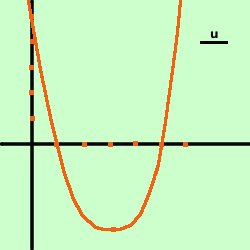
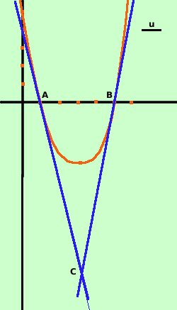

esercizio
Data la parabola
y= x2
- 6x + 5
trovare le equazioni delle tangenti condotte alla parabola nei punti di
intersezione con l'asse delle ascisse. Detti A e B tali punti, indicato con C il
punto di intersezione delle due tangenti calcolare l'area del triangolo ABC
Soluzione:

prima disegniamo la parabola.
Consideriamo i due punti A(1;0) e B(5;0) e calcoliamo le tangenti
alla parabola in questi punti
- tangente nel punto A(1,0)
considero il fascio di rette in A
y- 0 = m(x-1)
y = mx -m
Faccio il sistema fra il fascio di rette e la parabola
 y = mx - m
y = mx - m
y= x2
- 6x + 5
Sostituisco il valore della y dalla prima equazione nella seconda ed ottengo
l'equazione risolvente
mx -m =
x2
- 6x + 5
x2
- mx -6x + m+5 = 0
x2
-x(m+6) + m+5 = 0
questa e' l'equazione risolvente il sistema: per avere due soluzioni
coincidenti devo porre il delta dell'equazione uguale a zero
 = b2-4ac =
0 = b2-4ac =
0
Ho
a = 1
b = m+6
c = m+5
= b2-4ac =
(m+6)2 - 4 (1)(m+5) =0
m2 + 12 m + 36 -4m -20 = 0
m2 + 8 m + 16 = 0
(m+4)2 = 0
ottengo la soluzione doppia (due soluzioni coincidenti)
m + 4 = 0
m = -4
Ho quindi la tangente
y = mx - m
y = (-4)x -(-4)
y = - 4x + 4
-
tangente nel punto B(5,0)
considero il fascio di rette in B
y- 0 = m(x-5)
y = mx -5m
Faccio il sistema fra il fascio di rette e la parabola
y = mx - 5m
y= x2
- 6x + 5
Sostituisco il valore della y dalla prima equazione nella seconda ed ottengo
l'equazione risolvente
mx -5m =
x2
- 6x + 5
x2
- mx -6x + 5m+5 = 0
x2
-x(m+6) + 5m+5 = 0
questa e' l'equazione risolvente il sistema: per avere due soluzioni
coincidenti devo porre il delta dell'equazione uguale a zero
= b2-4ac =
0
Ho
a = 1
b = m+6
c = 5m+5
= b2-4ac =
(m+6)2 - 4 (1)(5m+5) =0
m2 + 12 m + 36 -20m -20 = 0
m2 - 8 m + 16 = 0
(m-4)2 = 0
ottengo la soluzione doppia (due soluzioni coincidenti)
m - 4 = 0
m = 4
Ho quindi la tangente
y = mx -5m
y = (4)x -5(4)
y = 4x - 20
Ora devo trovare il punto C : e' sufficiente risolvere il
sistema fra le tangenti
y = -4x + 4
y= 4x - 20
4x - 20 = -4x + 4
----------------
8x = 24
----------------
x = 3
y = -4x + 4
x = 3
y = -4(3) + 4

x = 3
y = -8
il punto di intersezione e' C=(3;-8)
Devo ora trovare l'area del triangolo ABC
ho i dati
C = (3;-8)
A = (1;0) B= (5;0)
Come metodo normale dovrei trovare prima la distanza fra due
punti e considerarla base del triangolo, considerare poi la retta su cui
ho preso tale distanza (retta per due punti) quindi dal terzo punto
considerare la distanza punto-retta che sarebbe l'altezza del triangolo e
quindi applicare la formula base per altezza diviso due ma in
questo caso, se osservi la figura puoi prendere come base il segmento
orizzontale AB, cioe' la somma (in valore assoluto) delle ascisse e come
altezza avremo il segmento che da C e' perpendicolare ad AB cioe'
l'ordinata (sempre in valore assoluto) del punto C
Abbiamo
AB = -|1| + |5| = 5 - 1 = 4
Altezza triangolo = |-8| = 8
per |-8| si intende il modulo
Area(ABC) = AB · altezza /2 = (4 · 8)/2 = 16
L'area del triangolo ABC vale 16 unita' quadrate del piano
|